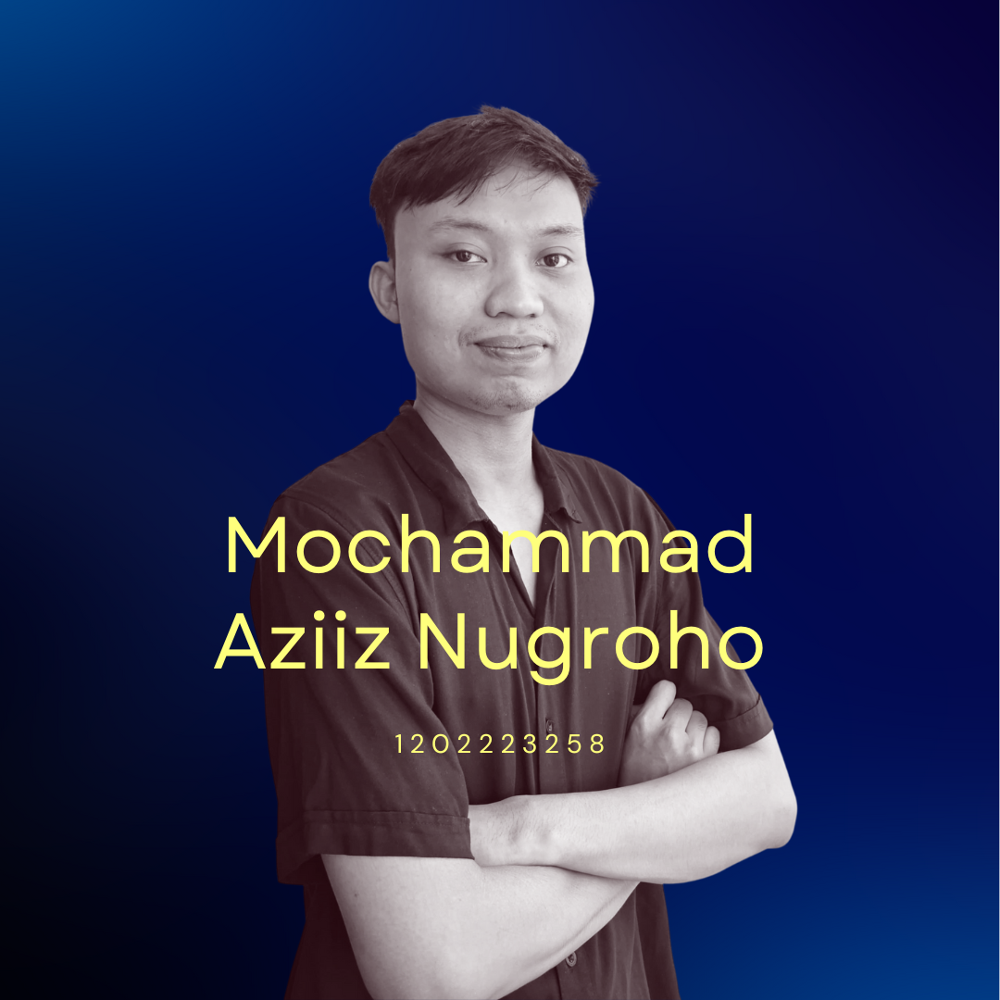

|  |
About MeSaya adalah mahasiswa semester 5 Telkom University, lahir di Tulungagung dua puluh tahun yang lalu. Sekarang sedang mengejar mimpi di kota bandung. |
EducationSMK Telkom Malang
Telkom University
|
|
|
Saya terdorong untuk berkontribusi secara nyata pada industri teknologi karena minat saya dalam memanfaatkan teknologi untuk perubahan yang positif, dan saya juga berkomitmen pada inovasi dan potensi transformatif yang dimilikinya. Dengan dasar akademis saya yang kuat dan fokus untuk menjembatani kesenjangan antara teknologi dan masyarakat, saya merasa terdorong untuk berkontribusi secara langsung pada industri teknologi. |
|